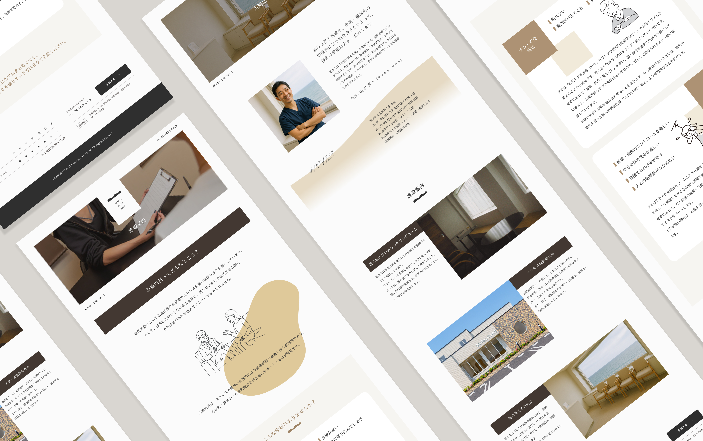

心療内科HANAメンタルクリニック様 公式サイト(架空)
Webサイト
概要
逗子・葉山駅にある心療内科、HANAメンタルクリニック(架空)の公式サイトのデザインを制作しました。無駄な情報を削ぎ落とし、すぐに予約できるような動線を意識しました。また、暖色の灯りが溢れる外観をメインビジュアルにするなど、心療内科へ行くことのハードルを下げ、安心感を与えられるようなデザインを目指しました。
ターゲット
10〜30代の心身に不調を覚える女性。
ご近所にお住まいの方々。
課題
口コミなどで患者が来院するが、なかなか地元での認知が広まらない。インターネットの力でより多くの目に届いてほしい。
スタッフが限られるため、予約受付を電話からインターネットに移行したい。
目的
駅近ながら海のすぐそばという好立地をキャッチコピーでアピールし、堅苦しすぎず、親しみやすさを感じられるデザインを設計する。ネット予約に辿り着きやすいような動線を作ることで、電話予約をの数を減らす。
情報設計
トップページには主要な症状を掲載し、訪問者が自分の症状が該当するかを判断しやすいようにしました。さらに、サイトの上部と下部に黒色のネット予約ボタンを配置し、電話番号よりも目立たせることで、予約ページへのアクセスをスムーズにしています。医院紹介ページでは、院長の顔写真や院内の清潔な様子を伝える写真を掲載し、安心感を与えられるよう配慮しました。全体として過度な実績報告やお知らせは控え、「この心療内科なら行きたい」と思っていただけるようなデザインを心がけています。
使用ツール
Figma